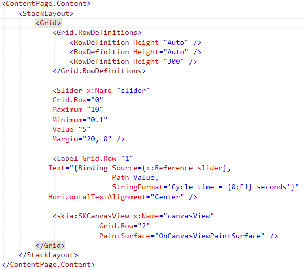
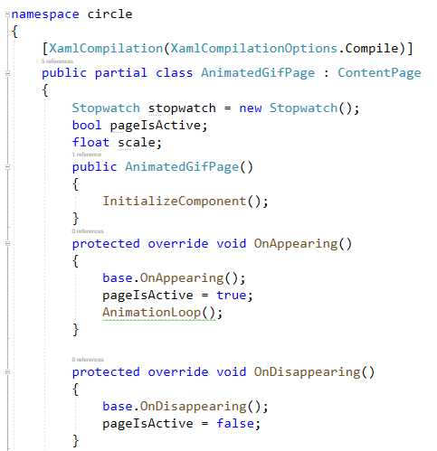
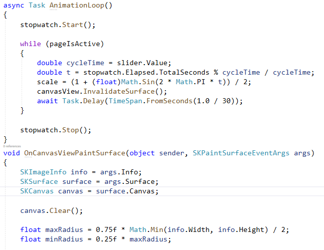
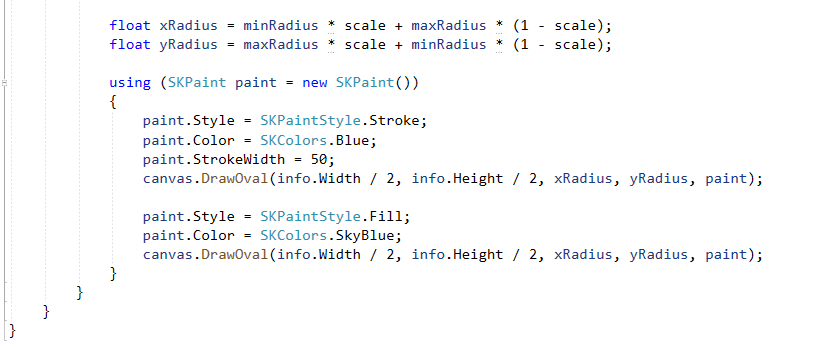

In this article, we see how to create a simple animation in Xamarin Android. To this end, a Xamarin Form design is utilized in Visual Studio 2019. 1. In Visual Studio, create a blank Xamarin Form application, 2. First we need an .xaml page namely AnimatedGifPage to add Canvas and SLider/br> In .xaml page should include three items including Slider, Label, and SKCanvasView. Your .xaml page should seem to be as follows:
Note that slider help us set the speed of animation. In the top of the xaml.cs page, Add the definitions of libraries given below are required to execute the codes. Installing SkiaSharp is a must to design an animation in Xamarin.
using SkiaSharp; using SkiaSharp.Views.Forms; using System; using System.Diagnostics; using System.Threading.Tasks; using Xamarin.Forms; using Xamarin.Forms.Xaml;
Following functions enable animation to start and stop whenever we want. protected override void OnAppearing() { base.OnAppearing(); pageIsActive = true; AnimationLoop(); } protected override void OnDisappearing() { base.OnDisappearing(); pageIsActive = false; }
The function called AnimationLoop provides a continuous execution as follows: async Task AnimationLoop() { stopwatch.Start(); while (pageIsActive) { double cycleTime = slider.Value; double t = stopwatch.Elapsed.TotalSeconds % cycleTime / cycleTime; scale = (1 + (float)Math.Sin(2 * Math.PI * t)) / 2; canvasView.InvalidateSurface(); await Task.Delay(TimeSpan.FromSeconds(1.0 / 30)); } stopwatch.Stop(); }
The function OnCanvasViewPaintSurface creates the animation object on .xaml as follows. void OnCanvasViewPaintSurface(object sender, SKPaintSurfaceEventArgs args) { SKImageInfo info = args.Info; SKSurface surface = args.Surface; SKCanvas canvas = surface.Canvas; canvas.Clear(); float maxRadius = 0.75f * Math.Min(info.Width, info.Height) / 2; float minRadius = 0.25f * maxRadius; float xRadius = minRadius * scale + maxRadius * (1 - scale); float yRadius = maxRadius * scale + minRadius * (1 - scale); using (SKPaint paint = new SKPaint()) { paint.Style = SKPaintStyle.Stroke; paint.Color = SKColors.Blue; paint.StrokeWidth = 50; canvas.DrawOval(info.Width / 2, info.Height / 2, xRadius, yRadius, paint); paint.Style = SKPaintStyle.Fill; paint.Color = SKColors.SkyBlue; canvas.DrawOval(info.Width / 2, info.Height / 2, xRadius, yRadius, paint); } } ####################################### The full version of the animation codes. ##############################################   